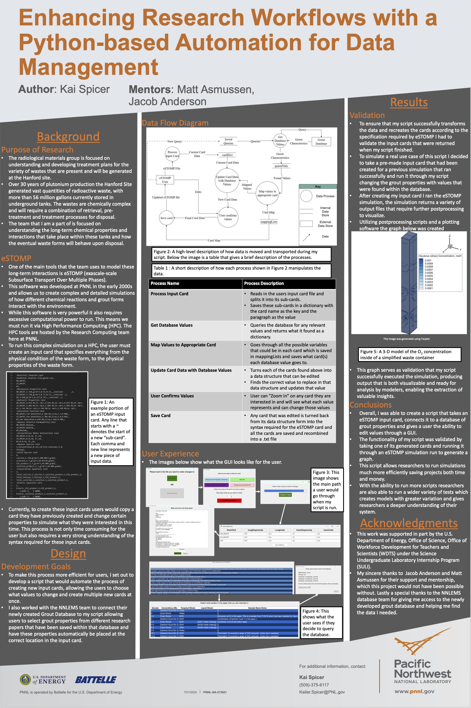

Work Experience
Below is a detailed summary of my current work experience, due to the majority of my working being in research labs, a lot of the work I've done is confidential or still waiting to be published. Due to this I can only include broad descriptions and share samples of my work that have been cleared for public release. If you have any further questions about my work experience feel free to contact me and I will share more detail if I can.
L2 Labs (Summer 2026)
Detailed paragraph about the beginning of your work here. When you want to add an image later, you will insert the image tag right before the paragraph you want to wrap around it.
Another paragraph of details. Because there is no image here yet, this text will simply span the full width of the page.
Columbia's DirecT Lab (Spring 2026)
Details about your work at Columbia's DirecT Lab.
PNNL's Radiological Materials Team (Summer 2025)
SULI Project: ESTOMP Input Card Generator
In the summer of 2025 I was selected to be apart of the Science Undergraduate Laboratory Internship (SULI) program at the Pacific Northwest National Laboratory (PNNL). I worked with the Radiological Materials Team in the Nuclear Science Division, assisting with modeling the long term behavior of the nucular waste stored at the Hanford site. This internship cumulatied in a Final Poster presentation that I presented to the Lab and a group of my peers. Below is a copy of my poster along with an shortened version of the speech I would give you if asked at a poster presentation.

My project was focused on making the life of researchers easier, the team I worked with is focused on modeling the around 50 million gallons of nucular waste stored in underground tanks at the Hanford site. In order to model this waste, we use a powerful tool developed by PNNL called ESTOMP (Enhanced Subsurface Transport Over Multiple Phases). This tool also modeling of complex chemical reactions; However, because it was develpoped in the early 2000s, it is written entirly in Fortran and is not very user friendly.
In order to achive this I used python to create a GUI that automates the creation of input cards for ESTOMP. These input cards are text files that contain all the parameters for a given simulation, they can be very long and complex, and a small mistake can cause a simulation to fail. My GUI allows users to input all the parameters through a user friendly interface, and then automatically generates the input card for them. This not only saves time, but also reduces the chances of errors in the input cards.
Overall, this project was a great learning expirence. It allowed me to work with messy data formats, legacy software and a domain specific research case. If you want to learn more about the details of this project you can read the full research paper that I co-authored with my mentor and the team, which is linked here.
EPA 1315 data proccessing
After my summer SULI session, I was extended to continue working with the team as a Tech Intern. In this role I support the team with various tasks, one of which was helping to create a script that proccesses EPA 1315 test data taht is collected in lab into a format tha can later be used in publications. This required us to create a standartized format for the input data. A python script that calculates all needed values and outputs them into the correct format. And a dynamic excel template that can be used to visulize all variations of the test.
After finishing up this project locally me and my mentor submitted it for software review within the lab so that it can be used in the actual research proccsss. This gave me great expirence in quality assurance and the review proccess for software in a research setting. This script is still being improved and going through the review proccess, so I can't share the final version of it yet but I hope to continue to work on it this summer.